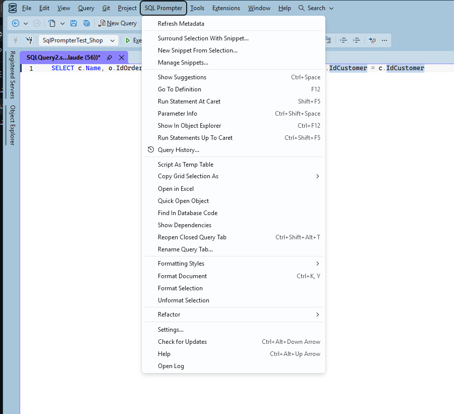
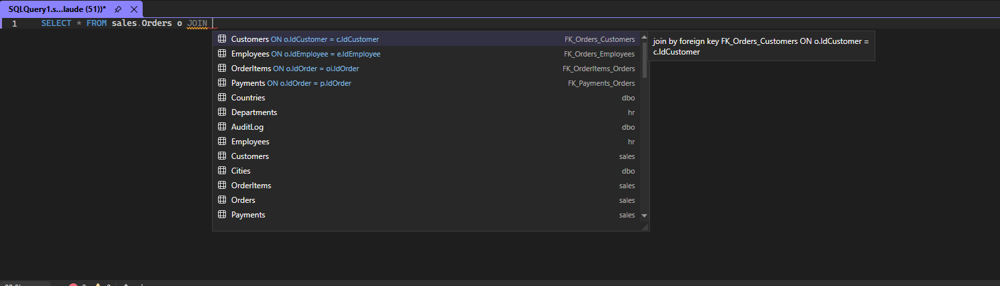

SQL Prompter
IntelliSense and editing tools for the query editor of SQL Server Management Studio 22. This is a reference: what each feature does, where it is configured and which keys it uses.
The help describes the extension as built (VSIX 0.200.x) and was checked against SSMS 22.11. Screenshots are taken in the Cool Breeze theme; every window follows the theme of SSMS, so it looks the same in the dark and the other themes (examples below).

What it does
| Area | Summary |
|---|---|
| Completion | One suggestion list for the whole script, driven by the metadata of the connected database: tables, views, columns, functions, procedures, keywords, parameters. Loose matching, ranking by use, descriptions, scripts of objects, column picker, parameter info, tooltips. |
| Aliases, INSERT, EXEC, joins | Aliases for tables, qualified columns, JOIN conditions from foreign keys, INSERT with a column list, EXEC with its parameters, cross-database and linked-server names. |
| Snippets | Prefix snippets with fields, shared folders, a manager window, wrapping the selection; compatible with the snippet files of SQL Prompt. |
| Formatting | Format Document and Format Selection with named styles, an editor with a live preview, import of SQL Prompt styles. |
| Coloring and confirmations | Tab, frame and status bar colored by server and database; confirmations before changes and open transactions. |
| Code analysis and fixes | Squiggles for suspicious code from a catalog of rules, quick fixes, refactorings. |
| Quick actions and navigation | The Ctrl tap popup, quick open, find in database code, dependencies, outline, Go To Definition. |
| History and tabs | Query history and the history of tabs with their versions, restore of tabs at start, reopen a closed tab, rename a tab. |
| Editor and grid tools | Run a statement, dry run, preview, auto-close, highlighting, copy the grid in several formats, Open in Excel. |
Principles
- Metadata only. The extension reads
sys.*views of the connected database in the background and never waits for the database while you type. Right after connecting, tables and columns may be missing for a moment. - Local. Settings, snippets, history and statistics stay in
%APPDATA%\SqlPrompter; the log is%LOCALAPPDATA%\SqlPrompter\sqlprompter.logand never holds passwords or script text. There is no telemetry. The only network access is the optional daily check for a new version. - Our list everywhere. The list comes from SQL Prompter everywhere except in strings, comments and numbers. Where it knows nothing it offers an empty list or keywords. The built-in IntelliSense of SSMS stays on for error underlining and quick info, but its list is not shown.
- Windows authentication and SQL logins. Windows and SQL authentication give full metadata. A window signed in with Microsoft Entra ID gets keywords and functions only.
The same windows in the dark theme


Where to start
- Type in a query window; the list opens by itself. Ctrl+Space opens it anywhere.
- Press and release Ctrl on its own to open quick actions.
- Open SQL Prompter > Settings... for every option, described option by option in Settings.
- All commands and keys are in Commands and keys; the log, versions and limits are in Troubleshooting.